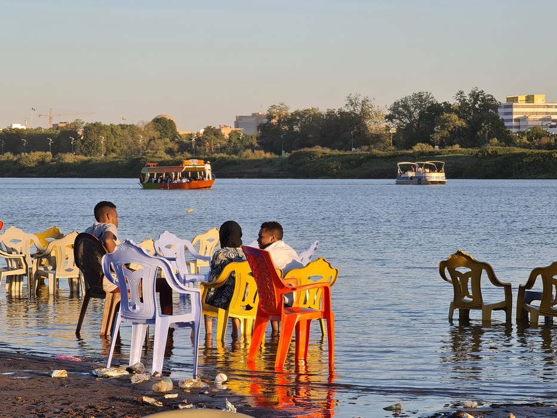
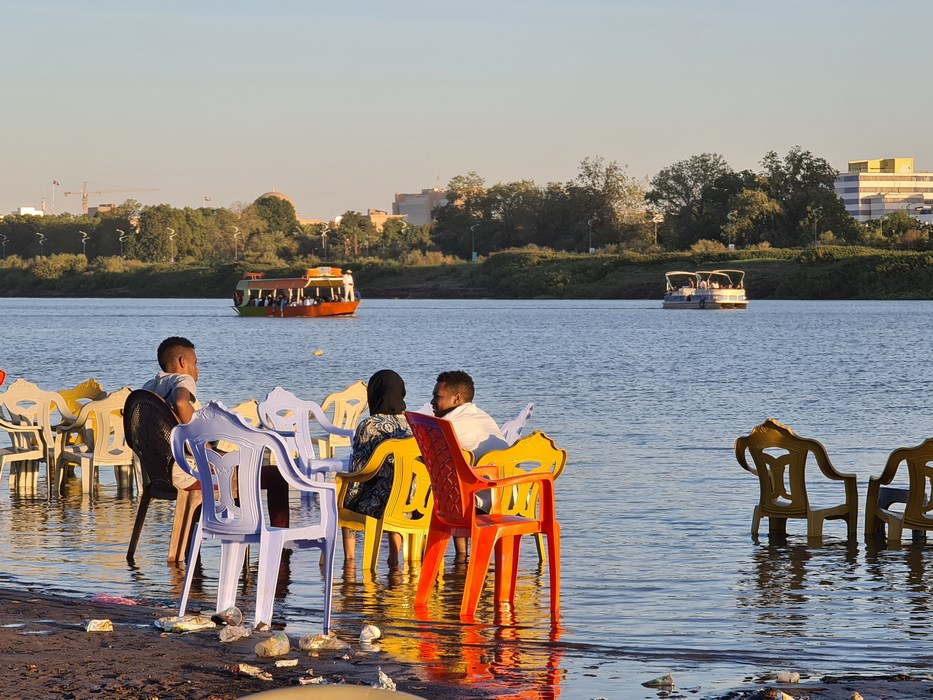

TASTES
Sudan has become synonyous with conflict and tragedy in the modern age. It's people have unfortunately been at the mercy of domestic and foriegn powers, who hold more regard in pillaging resources than for the well being of the commonwealth, leaving the country's rich history and untapped potential buried by the sands of time. The news headlines cover only the violence, and evoke a bad taste of empty sympathy from the world. This page looks to unearth and display the pieces of a culture cultivated by years of ancestry, influenced by exposure to many different ethnicities, and rooted in tradition and hospitality
Scroll below--
 
